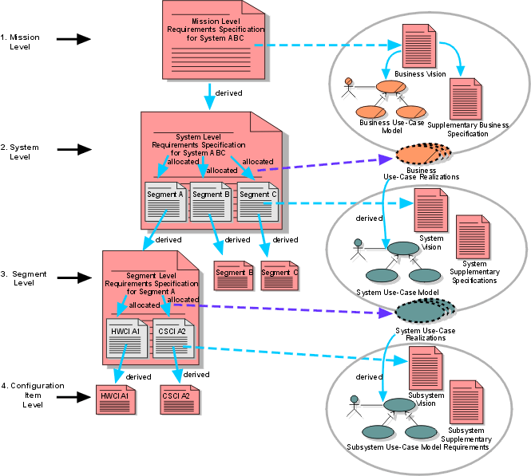

| Концепция: Производные требования |
 |
|
| Связанные элементы |
|---|
ВведениеПри разработке системы возникает необходимость иерархии требований - от наименее детальных (общие задачи системы, потребности пользователей) до наиболее детальных. Также существует несколько промежуточных уровней. На самом детальном уровне требования выражены в терминах технологии, используемой системой, а на высшем уровне детализации обычно выражены абстрактно в терминах проблемной области как функции, службы, свойства и т.д., при этом выбор терминов не играет большой роли. Разумеется, можно приписать значения этим словам для более точного выражения смысла, например, бывает, что описание той или иной функции или поведения не дает понятия о ее цели, однако, в данном случае это не требуется. Уточнение требований, начиная с высшего уровня и добавляя детали, может происходить в чисто функциональном ключе, т.е. детализацией функций и подфункций или подзадач, которые их поддерживают, без указания реализующей архитектуры. Далее можно перевести уточнение на уровень описания более глубоких процессов в системе, которые не имеют прямых связей вовне системы. Это типично, например, для структурного анализа, который продвинулся до примитивной пузырьковой диаграммы. Этот подход крайне не рекомендован по двум причинам: первая - потому что в его случае за требования принимается то, что требованием не является (рабочие продуты декомпозиции); вторая - это может быть причиной плохой архитектуры системы, которая, например, не соответствует другим не функциональным требованиям в случае, если проектировщик выполнит реализацию точно в соответствии с декомпозицией. Однако, это хорошая причина сделать некоторую функциональную декомпозицию в том случае, когда цели описаны на высоком уровне. При этом необходимо ограничивать глубину декомпозиции до значимых свойств функций, т.е. с достаточной детализацией для правильной реализации функций. Уточненные требования, происходящие из требований высокого уровня - это один из типов производных требований. Производные требованияВот простой пример:
Существует другой тип производных требований. Когда требования системного уровня выражены с соответствующими деталями реализации, тогда можно выполнять следующее:
Подобные требования низкого уровня являются производными требованиями. Они возникают при декомпозиции системы. Это отличается от подхода, основанного на функциональности, когда разделение происходит без связи с архитектурной декомпозицией и уточнением требований системного уровня (как описано во введении). Выделенные требованияВыделенные требования - это требования, по соображениям функциональности назначенные компонентам системы, таким как подсистемы аппаратного или программного обеспечения. На самом высоком уровне, когда, например, происходит анализ требований уровня цели для система-систем, стоит разработать функциональность для таких требований, а затем разделить результирующие производные требования и разместить группы в системы, возможно, уточняя перед реализацией. Кроме этого случая, в остальных случаях необходимо действовать как с производными требованиями. Даже на уровне система-систем, можно рассматривать подобные действия с помощью подхода бизнес моделирования. Обратите внимание, что при производном подходе происходит декомпозиция системы на сущности и определение требований сущностей с помощью изучения их взаимодействия для выполнения требований высшего уровня. При подходе выделения функциональности происходит декомпозиция требований и указание сущностей, которые удовлетворят требованиям низкого уровня. Выбор подхода зависит от контекста работы и ожиданий заказчика. Например, в Национальном агентстве аэронавтика и космоса (NASA) [в Руководстве по гарантировании программного обеспечения, NASA Goddard Space Flight Center Office of Safety, Reliability, Maintainability and Quality Assurance, 9/89] существует четыре уровня детализации требований:
 Уровни требований и их соответствие в RUP Обычно контракты подразумевают третий уровень требований. Например, такая система принята в NASA, и для компаний, сотрудничающих с NASA, целесообразно также адаптировать эту систему. Это оставляет разработчику запас гибкости при разработке требований низкого уровня. Однако, для требований высокого уровня существует очень высокий уровень абстрагирования требований миссии, которые часто являются требованиями программного уровня. Таким образом, происхождение требований системного уровня и размещение сегментов можно выполнять в соответствии с функциональностью. Даже системные требования обычно производятся с учетом архитектуры. Изображение выше показывает это, а также соответствие уровней NASA рабочим продуктам RUP (включая бизнес моделирование). Обратите внимание, что в RUP размещение, показанное в традиционном потоке, выполняется в процессе реализации вариантов выбора и последующем добавлении поведений. Синие пунктирные линии показывают соответствие уровней продуктов. |
© Copyright IBM Corp. 1987, 2006. Все права защищены.. |